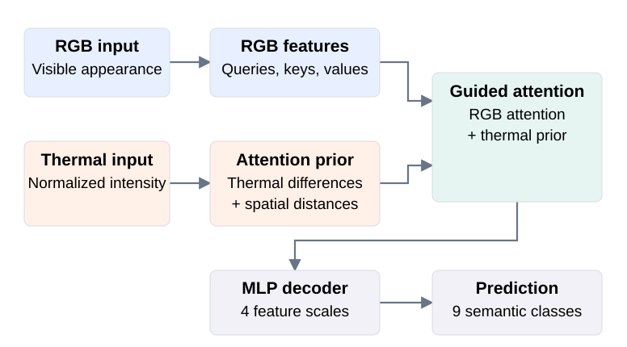

Thermal-guided Semantic Segmentation
SERES internship · 2025


Abstract
Low light can make people and other objects harder to distinguish in RGB images. Thermal input provides complementary contrast for pixel-level scene understanding.
During my internship at SERES, I adapted an RGB-D segmentation workflow to RGB-thermal inputs, working on attention-prior and fusion adaptation, data preparation, training, and evaluation.
Figures and metrics come from a public MFNet reconstruction completed in 2026, separate from the 2025 internship. Company data and archived company results are not shown.
Method
Differences in normalized thermal intensity, together with spatial distances, form an attention prior. This prior biases attention between RGB features. A multiscale MLP decoder combines four feature scales to predict nine semantic classes.


Results

RGB-only comparison
Both models used the same architecture, initialization, data splits, and training settings. Each was trained independently for 20 epochs with one random seed. The RGB-only control uses a constant auxiliary map during training and inference, removing thermal-intensity differences while retaining the spatial prior.
| Evaluation | RGB-only | RGB-T | Gain (pp) |
|---|---|---|---|
| 9-class mIoU All 393 test images | 49.89% | 51.32% | +1.43 |
| Person IoU 188 nighttime test images | 48.90% | 58.20% | +9.30 |
IoU measures overlap between predicted and ground-truth labels; mIoU averages it across classes. The reported 9-class mIoU includes Unlabeled. Checkpoints were selected separately using validation 8-class foreground mIoU. Gains are percentage points (pp), and aggregate metrics use all test pixels in each group.
Overall gains come from the full test set, not the illustrated scenes. This single-seed pilot evaluates thermal guidance under a matched 20-epoch setting. The technical report includes the complete results, limitations, and upstream sources.